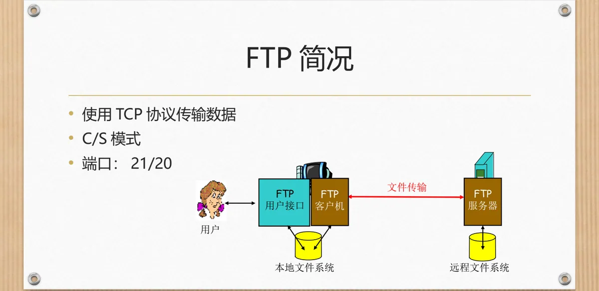
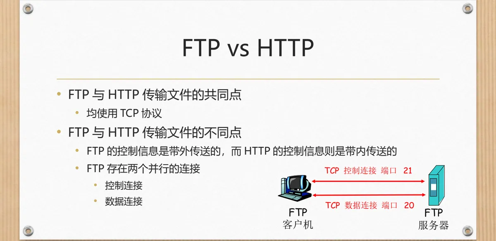

计算机通信与网络 · 第二版讲义 · 第 3 章 网络服务及应用
3.5 文件传输协议（FTP）
文件传输协议 FTP（File Transfer Protocol）在两台主机之间传文件：取回远程文件，或把本地文件送上远程主机。本节看它的组成，再与 HTTP 对比，最后列出常见命令与应答码。
1. FTP 的组成与工作方式
FTP 工作在客户—服务器方式（C/S 模式）下：一台主机运行 FTP 服务器，另一台运行 FTP 客户机；用户通过 FTP 用户接口表达意图，再由本机客户机与服务器之间完成传输。客户机一侧是本地文件系统，服务器一侧是远程文件系统，上传与下载就是同一个文件在这两个系统之间搬家。传输数据使用 TCP 协议，端口是 21 和 20。

2. 与 HTTP 的对比：两条连接、带内与带外
FTP 一次会话同时使用两条 TCP 连接：控制连接固定用端口 21，传命令与应答；数据连接用端口 20，专传文件内容。控制连接伴随整个会话，数据连接在真正传文件时才打开，应答码 125 与 425 都围绕它是否打开。
共同点只有一条：两者均使用 TCP 协议。不同点有两条：FTP 的控制信息带外传送，HTTP 的带内传送——HTTP 把请求行、首部与数据放在同一条连接里，FTP 的命令与应答另走控制连接；FTP 有两个并行连接，HTTP 一次请求与响应只用一条。

3. FTP 有状态，HTTP 无状态
更本质的差别是：FTP 连接有状态，HTTP 连接无状态。HTTP 的每个请求都被独立处理，服务器不记得上一个请求来自谁；FTP 服务器则在整个会话期间维护用户状态——把用户帐户和控制连接联系起来，登录一次后后续命令都认得是谁发的；追踪用户在远程目录树上的位置；追踪活动着的用户会话，以限制 FTP 会话总数。也正因为 HTTP 无状态，3.4 节才需要 Cookie 补出「记得用户」的能力。
4. 常见的 FTP 命令
界面上的动作变成控制连接上的命令，服务器逐条应答，会话从登录开始。
| 命令 | 作用 |
|---|---|
| USER username | 登录：提交用户名 |
| PASS password | 登录：提交口令 |
| LIST | 返回当前目录中的文件列表 |
| RETR filename | 取（gets）文件 |
| STOR filename | 存（puts）文件到远程主机 |
5. 常见的 FTP 应答
应答也经控制连接送回，形式是三位数字加一段英文短语。
| 应答 | 含义 |
|---|---|
| 331 Username OK, password required | 用户名已接受，还需要提供口令 |
| 125 data connection already open; transfer starting | 数据连接已经打开，开始传输 |
| 425 Can’t open data connection | 无法打开数据连接 |
| 452 Error writing file | 写文件时出错 |
331 出现在登录的中间：用户名已接受，还差口令；125 表示数据连接已就绪、开始传输；425 与 452 报告失败。课件特意问：FTP 的应答与 HTTP 的应答是否很类似？确实类似，3.4 节的 HTTP 响应状态码同样是「三位数字 + 短语」，只是 FTP 的应答是对每条命令的即时回话。
本节小结
- FTP 采用 C/S 模式：用户经 FTP 用户接口操作客户机，客户机与服务器用 TCP 传文件，端口 21 和 20，两端是本地与远程文件系统；
- 一次会话有两条并行连接：控制连接（端口 21）传命令与应答，数据连接（端口 20）传文件内容；与 HTTP 共同点是都用 TCP；
- FTP 控制信息带外传送，HTTP 带内；FTP 有状态（服务器维护用户帐户、目录位置与会话总数），HTTP 无状态；
- USER 与 PASS 登录，LIST 看目录，RETR 取文件，STOR 存文件；应答是三位数字加短语（331、125、425、452），详见第一版讲义 6.5 文件传送协议FTP。